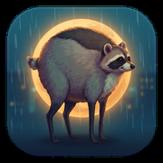

Jimothy: Rain City Rumble is a game played in this window; it needs JavaScript and WebGL to run.
Your browser does not support JavaScript.

Retry
v0.9.64
Click or press any key or button to start
Turn your device sideways to play
Jimothy plays in landscape. Sideways, the game and its controls fill the screen.
Play anyway
The game paused while the screen was away.
Tap to carry on